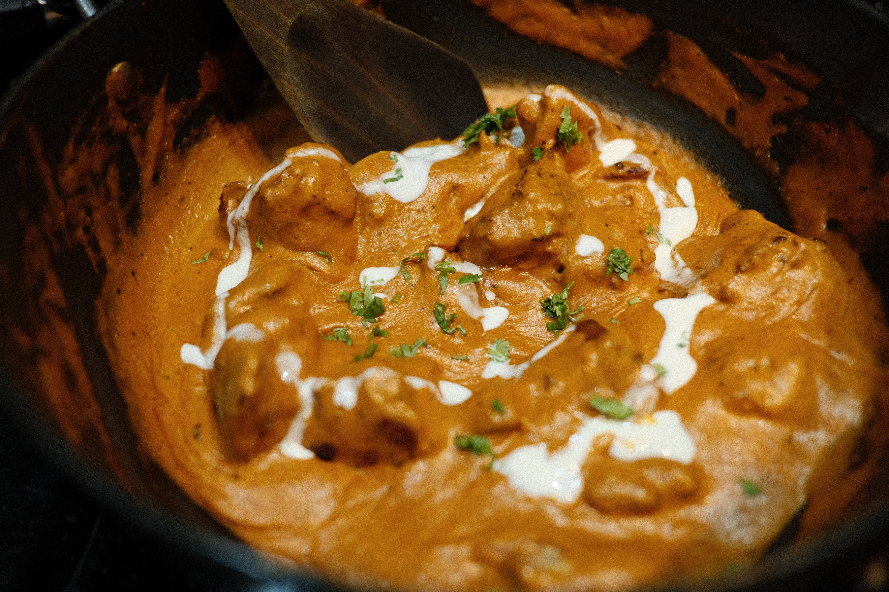
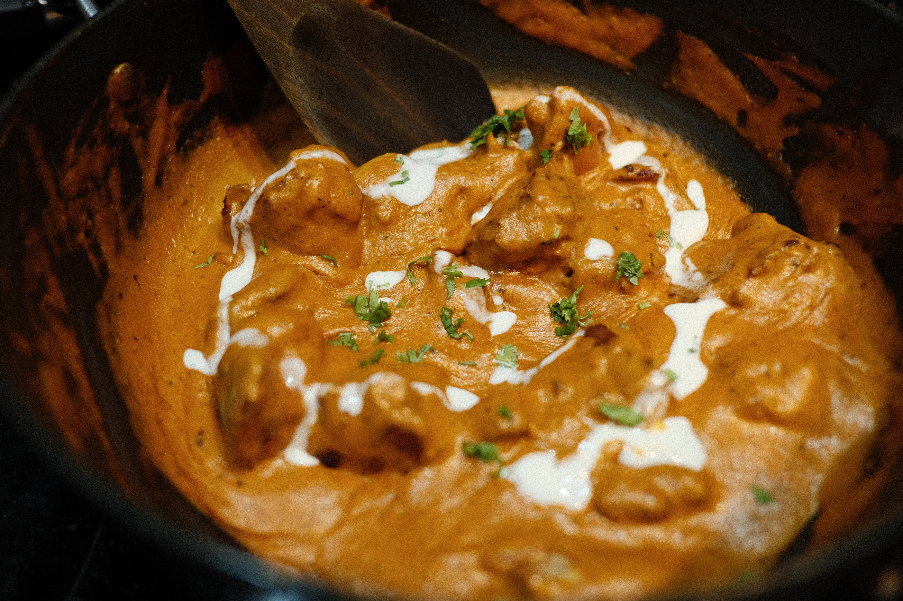

Lasagna
This is my mom's special homemade lasagna recipe with a meaty, made-from-scratch tomato sauce and a deliciously cheesy filling. A more traditional homemade lasagna filling would be made with ricotta but my mom's recipe calls for a blend of small-curd cottage cheese and Parmesan. I have found none better anywhere.

Dumplings
These tasty steamed pork dumplings make a perfect appetizer for a party or you can serve them as a main dish. Serve with hoisin sauce, hot Chinese-style mustard, and toasted sesame seeds. If you're looking for the best steamed pork dumplings recipe on the internet, you've come to the right place. These pork dumplings are as easy to assemble and steam as they are to eat.
 

Chicken Curry
This Indian-inspired creamy chicken curry recipe is similar to a curry I had in India. The aromatic spices and flavors are a delight to the senses! Delicious with fresh naan and basmati rice. You don't need to leave the house to enjoy satisfying Indian chicken curry. With this recipe, you can have a restaurant-worthy meal on the table in under an hour.
About Odin Recipes
Odin Recipes loves cooking. This project is meant to give you the possibility to discover new recipes and learn how to cook them. One of the main goals of Odin Recipes is to provide you recipes from all sort of cultures. From Italian to Indian to Chinese, you will be able to find the recipe that suits you the best. The process to cook the recipe is accurately described step by step, which can be understood by everybody. Once you have reached the goal of cooking the recipe you wanted, we invite you to tag us on Twitter, Instagram and Facebook.

About me
I am an italian high school student with a particular interest in coding and programming. My web development journey started in March 2022 and I'm always looking forward to learn new skills.
The Odin Project
In my opinion, The Odin Project is one of the best platforms to learn web development on the Internet. I started my coding journey alone, without any previous expierence. One of the greatest things about the Odin Project is the fact that is completely free. This platform provides you a full package that will allow you to enter the world of programming with great knowledge and useful skills. With the Odin Project you will learn through articles and various pieces of online documentation. And last but not least, is the possibility to build projects. Through these projects, you will indeed become a better programmer accumulationg every time more experience.